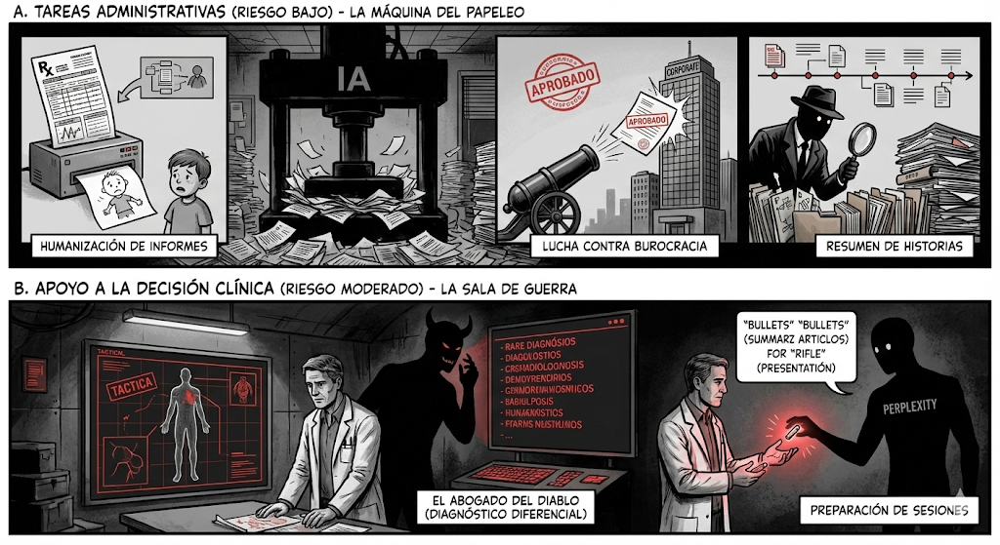

Bajo Riesgo: Tareas Administrativas
A. Tareas Administrativas y de Comunicación (Riesgo Clínico Bajo)
Aquí la IA brilla por su capacidad de procesar lenguaje natural.
Humanización de informes técnicos: Copia un informe de radiología complejo y pida: "Reescribe esto en lenguaje sencillo (nivel lectura 6º grado) para explicárselo al paciente, utilizando analogías para los términos técnicos".
Lucha contra la burocracia: "Redacta una carta de justificación clínica para la aseguradora solicitando la aprobación de [Fármaco X] para un paciente con [Condición Y], citando que ha fallado a las terapias estándar A y B."
Resumen de historias desordenadas: Copie las notas de evolución de las últimas dos semanas y pida: "Genera un resumen cronológico de los eventos más relevantes y los cambios en la medicación."
Texto
Apoyo a la Decisión Clínica (Riesgo Clínico Moderado)
Advertencia: En este nivel, la IA es un copiloto, nunca el piloto. Siempre verifica.
El "Abogado del Diablo" (Diagnóstico Diferencial): Ante un caso difícil, presente los síntomas y pida: "Dame 5 diagnósticos diferenciales probables y 3 diagnósticos raros pero graves que no debería pasar por alto. Justifica cada uno." Esto ayuda a romper el sesgo de cierre prematuro.
Preparación de sesiones clínicas: "Resume los 3 artículos más citados del último año sobre el manejo de la sepsis viral para una sesión de 10 minutos." (Nota: Para esto, es mejor usar IAs conectadas a internet como Perplexity).
